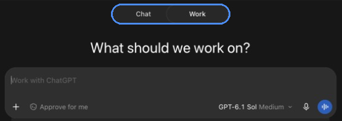

Start here: the app, Chat and Work
Get the official ChatGPT app and sign in with your .edu account
Install ChatGPT on your computer first. The desktop app has the full set of features. Skip search results and ads, which often point to look-alike apps, and type the address below into your browser.
- On your computer, type chatgpt.com/download into the browser address bar.
- Download and install the app for Mac or Windows. On Windows, the Microsoft Store listing must show OpenAI as the publisher.
- Open the app and choose Log in. Enter your full campus email address, the one ending in .edu.
- Finish your campus sign-in. Check that your school's workspace name shows in the profile menu.
Signed in with a personal email? Log out and sign in again with your .edu address so you get your campus plan and its data rules. Want it on your phone later? In the App Store or Google Play, install ChatGPT only when the publisher is OpenAI.
Chat or Work? Pick the mode at the top of the screen
Chat
Talk it through
Questions, quick drafts and explanations. You stay in the conversation and steer each reply.
Work
Hand off a job
Multistep tasks that produce a finished file, such as a report or slide deck. ChatGPT plans, uses your tools and reports back.


Quick win: Connect an approved document service, find five recent documents and ask for a one-line summary of each.